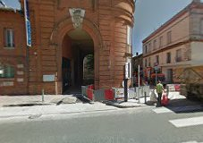
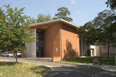
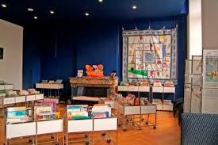
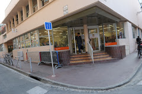
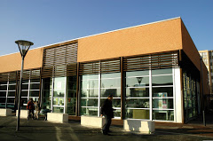
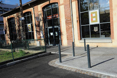
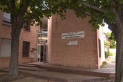
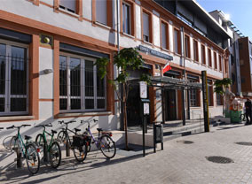
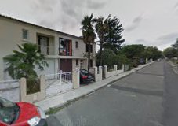

Bibliothèques de Toulouse
Afin de vous cultiver, voici toutes les bibliothèques de Toulouse.
Voir en plein écran
Bibliothèque Ancely

Bibliothèque Bonnefoy

Bibliothèque Côte-Pavée

Bibliothèque Duranti

Bibliothèque Fabre

Bibliothèque les Izards

Bibliothèque les Minimes

Bibliothèque Pinel

Bibliothèque P. des Demoiselles
Bibliothèque des Pradettes
Bibliothèque Saint-Exupéry

Bibliothèque Serveyrolles
Bibliothèque Rangueil
Bibliothèque Roseraie